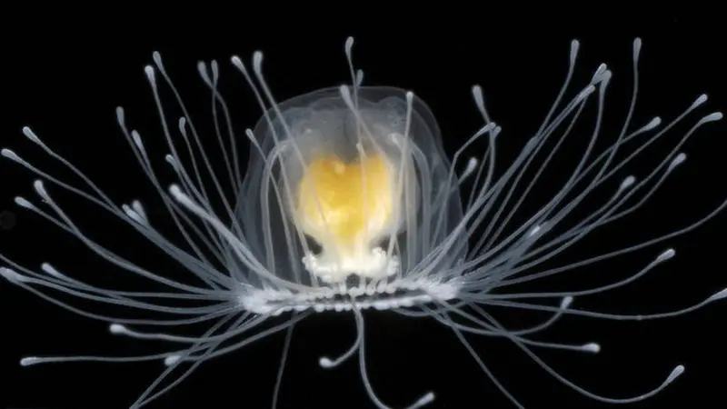

Mundo Secreto da Natureza
Home
Novidades
Noticias
Confira as Novidades do Mundo da Natureza
Scarface: O Rei da Savana que Desafiou o Tempo
Leia mais

Turritopsis nutricula: A Pequena Água-Viva que Desafia a Morte
Leia mais
Após 22 Anos, O Peixe-Mão-de-Rosa é Finalmente Avistado na Austrália
Leia mais
Border Collie: O Gênio do Mundo Canino
Leia mais
Nur: A Primeira Ursa Polar Nascida na América Latina
Leia mais